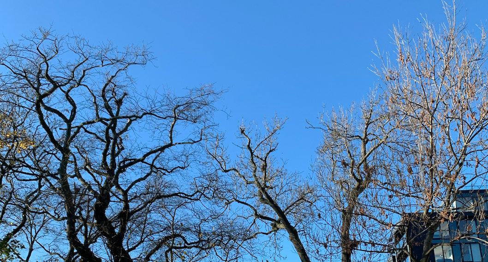

The Role of Green Spaces in Reducing Noise Pollution
This project studies the relationship between green spaces and noise, as well as the relationship between people and green spaces, which concluded that people can use green spaces to reduce noise exposure level while walking through them.
From the study of Edinburgh's green spaces and the distribution of internal roads, we produced suggestions for the transformation of Edinburgh's green space.
At the same time, it is associated with SIMD (Scottish Multiple Deprivation Index) and select data zones that have more economic deprivation but have green spaces around them and we put forward targeted suggestions.